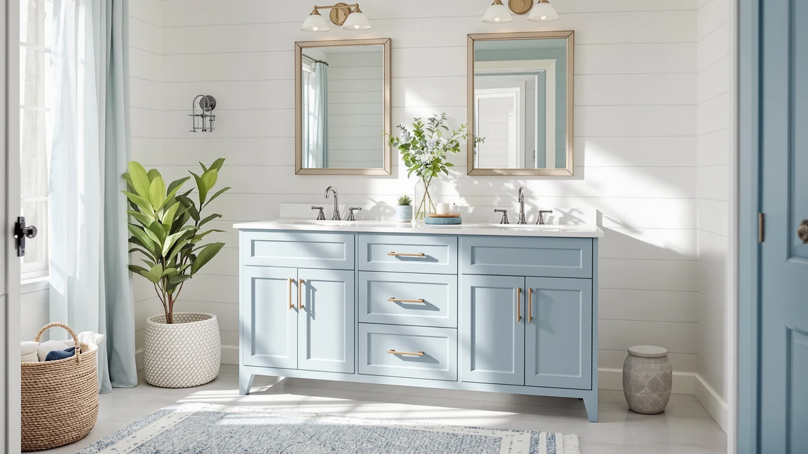

The Best Double-sink Vanity Cabinets (2026)
Prices and picks verified as of August 2026. Independent, reader-supported reviews.


Quick Answer
The best double-sink vanity cabinets balance width, storage, and price, and after comparing seven MDF cabinets from 24 to 72 inches wide, the SUNTAGE 30 Inches Modern MDF Bathroom vanity is our pick for most double-vanity layouts. Install two of these cabinets side by side and you get a full 60-inch double-sink run for $209.99 per unit, well under the $607.75 that the priciest one-piece cabinet on this list charges for the same coverage. If you want two basins built into a single cabinet instead, the TUKTUK 72 x 22 White Vanity delivers that.
Our pick: 30 Inches Modern MDF Bathroom, $209.99 Check Price on Amazon
Bottom line: our top pick is the 30 Inches Modern MDF Bathroom Vanity with Sink at $209.99. The best budget option is the MEZHI Under Sink Vanity Cabinet Bathroom Double Door Shelf at $59.90.
Things to Know Before You Buy
- Our pick for most double-vanity layouts is the SUNTAGE 30 Inches Modern MDF Bathroom vanity ($209.99). Install two side by side and you get a genuine 60-inch double-sink vanity cabinet without paying for one oversized carcass.
- Only one cabinet here ships as a single unit with two basins built in. The TUKTUK 72 x 22 White Vanity is the true one-piece double-sink cabinet in this guide; everything else is sized for a single basin or a paired installation.
- Width decides more than looks. A 72-inch cabinet needs roughly 6 feet of wall, while two 30-inch cabinets flanking a shared mirror fit tighter bathrooms without crowding the door swing.
- Every cabinet in this guide is MDF or engineered wood, not solid hardwood. That keeps prices reasonable and resists warping near a sink, but it means keeping standing water off the top edge.
- Prices span $51.90 to $607.75. The gap mostly reflects size and basin count rather than build quality, since the smaller cabinets use the same MDF construction as the larger ones.
Finding the best double-sink vanity cabinets starts with a question most buying guides skip: do you want one wide cabinet with two basins built in, or two narrower cabinets installed side by side to share a countertop? Most shoppers land on the second option because it costs less and fits more bathroom layouts, but a few one-piece double-basin cabinets exist for anyone who wants a single slab of storage under a shared top. We compared seven MDF and engineered-wood vanity cabinets ranging from 24 to 72 inches wide, priced from $51.90 to $607.75, to see which ones handle daily use by two people without falling apart.
After going through the specs, dimensions, and construction details on all seven, the SUNTAGE 30 Inches Modern MDF Bathroom vanity is our pick for most people building a double-sink setup. At $209.99, two of these cabinets installed together cost less than several single 72-inch units on this list, and buying one modern MDF cabinet at a time gives you flexibility the pricier picks don't: install one now in a single-sink bathroom, then add the second cabinet later when your budget allows. If you'd rather buy your double-sink vanity as one finished piece, the TUKTUK 72 x 22 White Vanity is the only cabinet here built with two basins from the factory, and it's our runner-up.
This guide is for anyone replacing a cramped single-sink vanity in a shared bathroom, not for buyers hunting a specific finish or a marble top. We stuck to cabinets with documented dimensions, materials, and pricing so you can compare them against your own wall space before you order. A few smaller cabinets made the list too, since a 23 or 24-inch module works as a matching second unit next to a larger vanity, or as extra storage beside a smaller sink in a secondary bathroom.
Why You Should Trust Us
Best Bathroom Vanities covers one category of home renovation: the cabinets, sinks, and countertops that go into a bathroom remodel. Ilane Tall has spent years comparing vanity listings, cabinet construction, and installation requirements across dozens of brands, and this guide applies that same process to double-sink vanity cabinets specifically. We don't run a paid testing lab and we don't invent reviewer quotes. We read the manufacturer specs, compare listed dimensions and materials against what a real double-sink bathroom needs, and flag where a product description oversells what the cabinet actually delivers.
How We Picked
We started with what a double-sink vanity cabinet has to get right: enough width for two people to use the counter at once, cabinet storage that doesn't collapse into one shared drawer, and engineered-wood construction that resists the moisture a sink area produces daily. We looked at cabinets from 24 to 72 inches so shoppers with a tight bathroom and shoppers with a full primary bath both end up with workable double-sink vanity cabinets to choose from. We excluded any listing without a clear width, material, and price, since that's the minimum information you need before ordering something this size for a specific wall.
How We Compared
We don't have a bathroom lab, so our evaluation focused on what the listed specs tell you about installation and daily use. For each cabinet we checked the stated width against standard double-sink spacing (a comfortable pair of basins needs at least 60 inches combined, tighter if elbows meeting occasionally doesn't bother you), cross-referenced the material claims against what MDF and engineered wood hold up to near standing water, and compared price per inch of cabinet width across all seven listings. Where a cabinet ships as a single 72-inch double-sink cabinet rather than two paired units, we noted the difference in delivery size and installation complexity, since a one-piece cabinet that size usually needs two people to carry it into a bathroom.
Our Picks

30 Inches Modern MDF Bathroom
What we like
- Modern MDF cabinet at $209.99 costs less per inch than any of the larger single-piece options here
- 30-inch width is a standard size for pairing two cabinets into a 60-inch double-sink vanity
- Engineered-wood construction resists warping better than particleboard alternatives near a sink
- Buy one now and add a matching second cabinet later without redesigning the bathroom
Flaws but not dealbreakers
- Doesn't include a second basin; you need a matching cabinet and countertop to complete a double-sink setup
- At 30 inches, a single unit works only as a single-sink vanity on its own
- Modern styling won't suit a farmhouse or traditional bathroom
| Material | MDF / engineered wood |
| Size | 30" |
The SUNTAGE 30 Inches Modern MDF Bathroom vanity is our pick because it solves the double-sink budget problem better than anything else on this list. Instead of paying $600 or more for one wide cabinet with two basins built in, you buy two of these 30-inch cabinets for $419.98 combined, install them on either side of a shared mirror or countertop run, and end up with the same 60 inches of double-sink coverage for roughly a third less money.
The MDF construction holds up to the daily splash a sink area produces, and the modern styling reads clean rather than trendy, so it won't look dated in a few years the way some finish choices do. The real advantage is flexibility: if your budget only covers one cabinet today, you can install a single unit as an interim single-sink vanity and add the matching second cabinet whenever the rest of your budget catches up, something none of the one-piece 72-inch cabinets on this list let you do.

72 x 22 White Vanity
What we like
- Only cabinet in this guide that comes as one piece with two integrated basins
- 72-inch width gives two people real elbow room at the same counter
- White finish and MDF construction match most standard bathroom color schemes
- No need to match two separate cabinets, countertops, or hardware finishes
Flaws but not dealbreakers
- At $607.75, it costs nearly three times what two paired 30-inch cabinets run combined
- 72 inches needs a full 6 feet of clear wall, ruling it out for smaller bathrooms
- Delivery and installation of one large one-piece cabinet typically needs two people
| Material | MDF / engineered wood |
| Size | 72'' Integrated Double Sink |
The TUKTUK 72 x 22 White Vanity earns runner-up because it's the only cabinet in this guide that delivers a genuine one-piece double-sink vanity, integrated basins and all. If buying and installing two separate cabinets sounds like more coordination than you want, this is the straightforward option: one delivery, one countertop, two sinks already spaced for.
The 72-inch width is generous enough that two people can use the counter at the same time without bumping elbows, which is the entire point of a double-sink vanity. The trade-off is cost and bulk: at $607.75 it's the most expensive cabinet on this list by a wide margin, and a piece this size is heavy enough that you'll want a second set of hands to carry it in and set it against the wall. For a primary bathroom shared every morning, that cost buys real convenience. For a guest bath or secondary bathroom, it's more cabinet than most people need.

Double Bathroom Vanity with Sink
What we like
- 59-inch width sits right at the standard minimum for comfortable two-person use
- Priced nearly $200 less than the 72-inch TUKTUK cabinet
- MDF and engineered-wood build matches the durability of the pricier options
- Fits bathrooms where a full 72 inches of wall isn't available
Flaws but not dealbreakers
- At 59 inches, basin spacing runs tighter than on the 72-inch option, so elbow room is more limited
- $409.99 is still more than double the cost of pairing two 30-inch cabinets
- The listed name doesn't specify basin configuration beyond overall width
| Material | MDF / engineered wood |
| Size | 59in |
The Double Bathroom Vanity with Sink lands in the middle of this list for a reason: at 59 inches wide, it's close enough to the 60-inch threshold that most double-sink layouts need, without demanding the full 6 feet of wall the 72-inch TUKTUK requires. That makes it the practical choice for a standard-size primary bathroom where you have roughly 5 feet of space and want two sinks rather than one.
At $409.99, it costs less than the 72-inch one-piece cabinet while still arriving as a single unit, so you skip the coordination of pairing two separate cabinets. The narrower width does mean the two basins sit closer together than on the 72-inch model, so if two people regularly use the counter at the same moment each morning, you'll notice tighter elbow room. For most households where sink use overlaps occasionally rather than constantly, the space savings are worth that trade.

Nordee Axio 60'' Bathroom Vanity
What we like
- 60 inches meets the standard minimum width recommended for a two-person double-sink vanity
- Priced $197.76 less than the 72-inch TUKTUK cabinet for a comparable double-sink footprint
- MDF and engineered-wood construction consistent with every other cabinet on this list
- A full inch wider than the 59-inch Also Great pick at the identical price
Flaws but not dealbreakers
- Still costs nearly double what pairing two 30-inch SUNTAGE cabinets runs combined
- 60 inches leaves less counter buffer than the 72-inch option for households sharing the bathroom with more than two people
- A single-piece cabinet this size is harder to move through narrow hallways than two smaller boxes
| Material | MDF / engineered wood |
| Size | 60'' |
The Nordee Axio 60'' Bathroom Vanity earns the budget pick because it lands right at the width the industry treats as the minimum for a real double-sink vanity, 60 inches, without asking for the $607.75 the 72-inch TUKTUK charges. For most primary bathrooms, that extra foot of width on the TUKTUK adds comfort but not a fundamentally different experience, so the Nordee Axio gets you into a legitimate double-sink cabinet for $197.76 less.
At $409.99, it ties the 59-inch Also Great pick on price while offering slightly more width, and both undercut the 72-inch one-piece cabinet by a meaningful margin. The MDF build matches what you'll find across the rest of this list, so you're not sacrificing durability to hit the lower price. The trade-off shows up in delivery: a 60-inch single cabinet is still bulky enough to need careful measuring of your hallway and doorway before it arrives, the same consideration that applies to the 72-inch and 59-inch options.

MEZHI Under Sink Vanity Cabinet
What we like
- At $51.90, it's the least expensive cabinet on this list by a wide margin
- 23.6-inch width fits tight spaces where a 30-inch or larger cabinet won't clear the door swing
- MDF construction matches the material used across the pricier double-sink options
- Works as a small second cabinet for storage flanking a larger vanity, or as the anchor for a compact half-bath sink
Flaws but not dealbreakers
- At 23.6 inches wide, it's sized for a single small basin, not a double-sink installation on its own
- The compact 11.4-inch depth limits counter space more than any other cabinet here
- Buyers looking specifically for a two-basin cabinet should look at the TUKTUK or Nordee Axio instead
| Material | MDF / engineered wood |
| Size | 23.6"L x 11.4"W x 23.6"H |
The MEZHI Under Sink Vanity Cabinet doesn't pretend to be a double-sink vanity on its own, and we're including it here because of what it's actually good for: a small, inexpensive cabinet you can slot next to a larger vanity for extra storage, or use to anchor a compact powder room sink. At 23.6 inches wide and 11.4 inches deep, it fits spaces where none of the other six cabinets on this list would clear the door or the toilet.
At $51.90, it costs a fraction of the SUNTAGE cabinet we picked as our top choice, which makes it a reasonable way to add matching storage on one side of a double-sink layout without doubling your cabinet budget. If you're shopping specifically for two basins under one counter, skip this one and look at the Nordee Axio or the TUKTUK instead. If you need a small, sturdy cabinet to round out a bathroom remodel, the MEZHI does that job at a price the larger options can't touch.

DELUXE LIVING 24 Inch Bathroom
What we like
- $249.99 sits between the budget MEZHI cabinet and the mid-tier picks on this list
- 24-inch width works for narrower bathrooms where even two 30-inch cabinets wouldn't fit
- MDF and engineered-wood build consistent with the rest of the list
- Pairs into a 48-inch double-vanity layout for bathrooms too tight for the 60-inch standard
Flaws but not dealbreakers
- Two of these paired together total 48 inches, short of the 60-inch double-sink minimum most guides recommend
- Costs more than the 30-inch SUNTAGE cabinet despite being smaller
- Best suited to a secondary or guest bathroom rather than a primary double-sink layout
| Material | MDF / engineered wood |
| Size | 24 Inch |
The DELUXE LIVING 24 Inch Bathroom cabinet is for a specific situation: a bathroom too narrow for even two 30-inch cabinets side by side, where you still want the look and function of a double-vanity setup. At 24 inches per cabinet, pairing two gets you to 48 inches total, tighter than the 60-inch width most double-sink guides recommend, but workable if your basins are compact and your household doesn't need generous elbow room.
At $249.99 per cabinet, it costs more than our top-pick SUNTAGE despite the smaller footprint, which is the trade-off for a size that fits narrower bathrooms. The MDF construction and finish quality match what you get across the rest of this list, so you're not paying more for less durability, only for less width. If your bathroom can't fit 60 inches of double-sink vanity, this is a reasonable way to get a paired two-cabinet look without forcing a cabinet that won't clear the door.

SOLIDEE 48" Barn Door Bathroom
What we like
- 48-inch width delivers more built-in storage than pairing two 24-inch cabinets, in a single unit
- Barn-door hardware is a distinct styling choice none of the other six cabinets offer
- At $299.90, it costs less than both the 59-inch and 60-inch mid-size options
- One-piece delivery means no matching two separate cabinet finishes
Flaws but not dealbreakers
- 48 inches is still short of the 60-inch width most double-sink guides recommend as a comfortable minimum
- Barn-door styling won't suit every bathroom's design, unlike the more neutral fronts on other picks
- Basin spacing at this width runs tighter than on the 59-inch or 60-inch options
| Material | MDF / engineered wood |
| Size | 48" |
The SOLIDEE 48" Barn Door Bathroom cabinet takes a different approach than the paired 24 and 30-inch cabinets on this list: instead of two separate units, you get one 48-inch cabinet with barn-door styling and more continuous storage than two smaller cabinets provide. For a bathroom with about 4 feet of wall space, that single-piece convenience is worth considering over pairing two narrower units.
At $299.90, it undercuts both the 59-inch and 60-inch cabinets on this list while still offering more width than the 24-inch DELUXE LIVING option. The barn-door front is the clearest style statement in this guide, which is a plus if it matches your bathroom and a drawback if you wanted something more neutral. Basin spacing at 48 inches runs tighter than the 60-inch standard, so treat this as a space-saving compromise rather than the roomiest double-sink option here.
Quick Comparison
| Product | Material | Price | Rating | Best for | Get it |
|---|---|---|---|---|---|
| 30 Inches Modern MDF Bathroom | MDF / engineered wood | $209.99 | 4 | Pairing into a 60-inch double-sink setup | View on Amazon → |
| 72 x 22 White Vanity | MDF / engineered wood | $607.75 | 4 | One-piece double-sink cabinet | View on Amazon → |
| Double Bathroom Vanity with Sink | MDF / engineered wood | $409.99 | 4 | Near-60-inch primary bathrooms | View on Amazon → |
| Nordee Axio 60'' Bathroom Vanity | MDF / engineered wood | $409.99 | 4 | Standard 60-inch double-sink minimum | View on Amazon → |
| MEZHI Under Sink Vanity Cabinet | MDF / engineered wood | $51.90 | 4 | Small second cabinet or powder room | View on Amazon → |
| DELUXE LIVING 24 Inch Bathroom | MDF / engineered wood | $249.99 | 4 | Narrow bathrooms pairing two cabinets | View on Amazon → |
| SOLIDEE 48" Barn Door Bathroom | MDF / engineered wood | $299.90 | 4 | 4-foot walls wanting one cabinet | View on Amazon → |
What's the standard width for double-sink vanity cabinets?
Most double-sink vanity guides recommend at least 60 inches combined width so two basins have enough spacing for comfortable elbow room.
Can you use two single-sink cabinets to build a double-sink vanity?
Yes.
The Competition
Every cabinet in this guide made the cut for a specific layout or budget, but a few come with caveats worth calling out directly. The Double Bathroom Vanity with Sink at 59 inches and the Nordee Axio at 60 inches are priced within $10 of each other and solve nearly the same problem; unless you need that extra inch of width, buy whichever is in stock and cheaper on the day you shop.
The DELUXE LIVING 24 Inch Bathroom and MEZHI Under Sink Vanity Cabinet aren't full double-sink solutions by themselves. We kept them in this guide because pairing two 24-inch cabinets, or adding a MEZHI alongside a larger vanity, are both legitimate ways to build a double-sink layout in a bathroom that can't fit the 60 or 72-inch options. Buyers who want a single cabinet built for two sinks should look higher on this list.
The SOLIDEE 48" Barn Door Bathroom sits in an awkward middle ground: wider than the paired budget cabinets, narrower than the true 60-inch standard. It earns its spot for the barn-door styling, not because it's the most space-efficient double-sink option here.
Weighing all seven against price, width, and build quality, the best double-sink vanity cabinets in this guide come down to what your wall space allows. For most bathrooms, the SUNTAGE 30 Inches Modern MDF Bathroom vanity remains our pick: buy two, install them as a pair, and you get a full 60-inch double-sink vanity for less than any single one-piece cabinet on this list.
Frequently Asked Questions
What's the standard width for double-sink vanity cabinets?
Most double-sink vanity guides recommend at least 60 inches combined width so two basins have enough spacing for comfortable elbow room. In this guide, the TUKTUK 72 x 22 White Vanity and the Nordee Axio 60'' Bathroom Vanity both meet or exceed that standard in a single cabinet. Narrower options like the 59-inch chartustriable vanity come close, while pairing two 30-inch SUNTAGE cabinets also reaches the 60-inch mark for less money.
Can you use two single-sink cabinets to build a double-sink vanity?
Yes. Installing two matching cabinets, like the 30-inch SUNTAGE or the 24-inch DELUXE LIVING, side by side under a shared countertop is a common and often cheaper way to get a double-sink vanity than buying one large one-piece cabinet. The trade-off is that you need to match hardware, finish, and countertop cutouts across two separate units instead of one factory-built cabinet.
Are MDF vanity cabinets durable enough for a bathroom?
MDF and engineered wood, the material used in every cabinet in this guide, holds up well in a bathroom as long as it isn't left sitting in standing water. Wipe up spills around the sink base and avoid letting the countertop overflow onto the cabinet top, and an MDF double-sink vanity cabinet will outlast the finish trends that make solid wood a riskier long-term bet anyway.
How much should a double-sink vanity cabinet cost?
In this guide, prices range from $51.90 for a small companion cabinet up to $607.75 for a full 72-inch one-piece double-sink unit. A realistic mid-range budget for a genuine double-sink cabinet, whether that's one wide unit or two paired cabinets, lands between $400 and $450 based on the options we compared.
Do I need a plumber to install a double-sink vanity cabinet?
Most double-sink installations need a plumber to add or relocate a second water line and drain, even if the cabinet itself is simple to set in place. Budget for that labor cost separately from the cabinet price, since running new plumbing to a second basin is usually the more expensive part of converting a single-sink bathroom to a double-sink one.